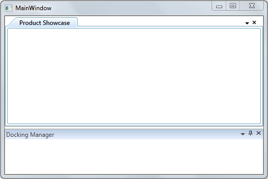

Users can decide whether the docked windows should be auto-hidden as per default behavior or be visible when DockFill is enabled and tabbed documents are present using the DockFillDocumentMode property. To make the docked and tabbed documents visible when DockFill is True, set this property to DockFillDocumentMode.Normal. To make the docked windows auto-hide while tabbed documents are visible when DockFill is True, set this property to DockFillDocumentMode.Fill. By default the value of the DockFillDocumentMode property is set to DockFillDocumentMode.Fill.
The following code snippet shows how to set values for the DockFillDocumentMode property:
|
[XAML]
<syncfusion:DockingManager x:Name="dockingManager" DockFillDocumentMode="Normal" UseDocumentContainer="true" > <!-- Product Showcase Window --> <ListBox BorderThickness="0" Name="Parent1" syncfusion:DockingManager.State="Document" syncfusion:DockingManager.DesiredHeightInDockedMode="100" syncfusion:DockingManager.Header="Product Showcase" > </ListBox> <!-- Docking Manager Window--> <ListBox BorderThickness="0" syncfusion:DockingManager.SideInDockedMode="Bottom" syncfusion:DockingManager.Header="Docking Manager" > </ListBox> </syncfusion:DockingManager >
|
|
[C#]
this.dockingManager.DockFillDocumentMode =DockFillDocumentMode.Normal; |

Figure 362: DockFillDocumentMode = “Normal” (when DockFill is set to True)